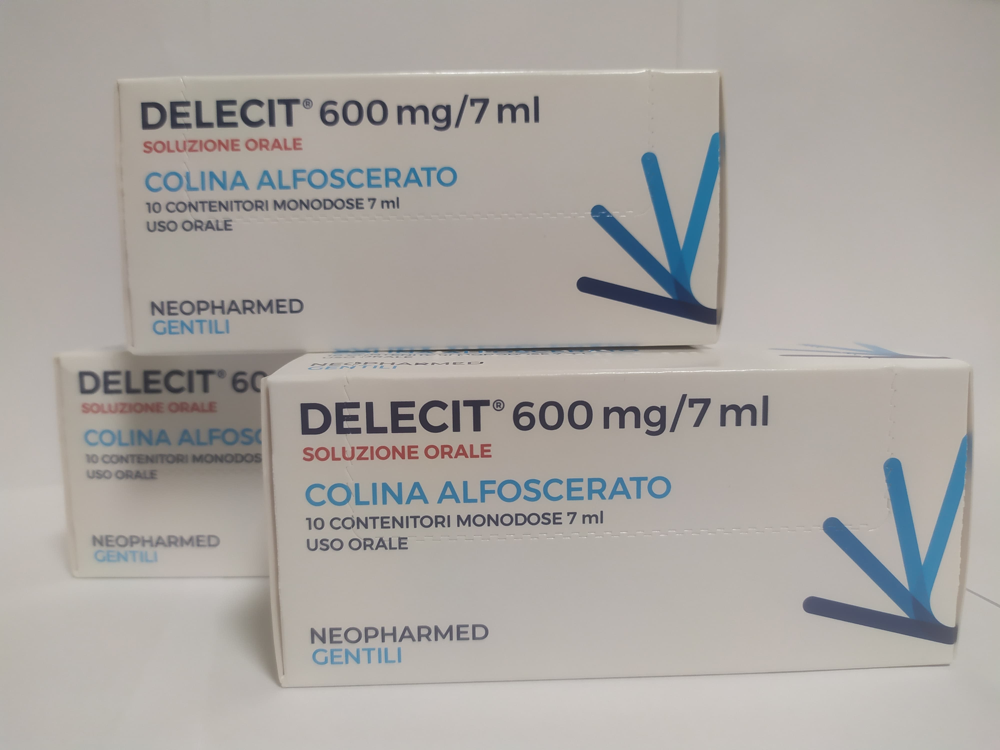

Контактна інформація:
Ціна: 1150 грн/уп.
В наявності
Виробник: Італія
Ціна: 1150 грн/уп.
В наявності
Саме в FarmItal ви можете купити Делеціт,Delecit в Україні, Гарантовано Якісний!
Доставка Delecit здійснюється транспортними компаніями, терміни виконання замовлення обумовлюються менеджером Фармітал. Ви можете замовити Делеціт капсули у містах: Одеса, Херсон, Чернігів, Сєверодонецьк, Бердянськ, Бровари, Дніпро, Вінниця, Київ, Слов'янськ, Полтава, Краматорськ, Біла Церква, Кам'янське, Маріуполь, Чернівці, Олександрія, Кам'янець-Подільський, Львів, Запоріжжя, Кропивницький, Житомир, Івано-Франківськ, Суми, Черкаси, Костянтинівка, Мелітополь, Кривий Ріг, Рівне, Луцьк, Нікополь, Павлоград, Ужгород, Кременчук, Лисичанськ, Хмельницький, Тернопіль, Харків, Миколаїв, а також в інших населених пунктах України.
Розчин для прийому внутрішньо 7 мл у флаконі - 10 флаконів в упаковці
Холіноміметік. Є попередником ацетилхоліну. Чинить вплив переважно на холінергічні рецептори в ЦНС. Гліцерофосфат, який утворюється при розщепленні холіну альфосцерату, є попередником фосфоліпідів (фосфатидилхоліну) мембрани нейрона. Полегшує передачу нервових імпульсів у холінергічних нейронах, покращує пластичність нейрональних мембран та функцію рецепторів.
1 флакон містить холіну альфосцерат 600 мг
Зберігати в сухому, недоступному для дітей місці при температурі не вище 25°С.